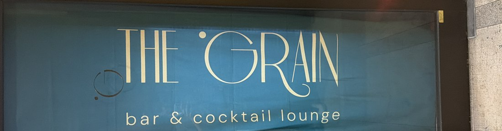

Bar aperitivo · Montebelluna
The Grain
Cocktail firmati, spritz curati e taglieri da condividere, in Via Luigi Serena nel cuore di Montebelluna.

Chi siamo
Un aperitivo curato, senza fretta
The Grain è il bar aperitivo di Via Luigi Serena, pensato per chi ama i cocktail ben fatti e un buon tagliere da condividere in compagnia. Un angolo di Montebelluna dove fermarsi con calma, tra un calice e una chiacchiera.
- Cocktail firmati e grandi classici
- Spritz e bollicine per l'aperitivo
- Taglieri e stuzzichini da condividere
L'atmosfera
Il rito dell'aperitivo, fatto bene
Golden hour
Il momento migliore della giornata per un calice e due chiacchiere tra amici.
Cocktail firmati
Ricette curate, dai grandi classici alle proposte della casa.
Taglieri da condividere
Selezioni di salumi e formaggi pensate per la convivialità.
Buona compagnia
Un ambiente informale, ideale per l'aperitivo dopo il lavoro o prima di cena.
Galleria
Un assaggio dell'atmosfera
Foto segnaposto — presto il racconto per immagini del locale e dei nostri drink.
Seguici
Resta aggiornato sui nostri canali
Orari, serate ed eventi si trovano sempre aggiornati sui nostri social: è anche il modo più veloce per scriverci e prenotare un tavolo.
Contatti
Vieni a trovarci
Via Luigi Serena — Montebelluna (TV)